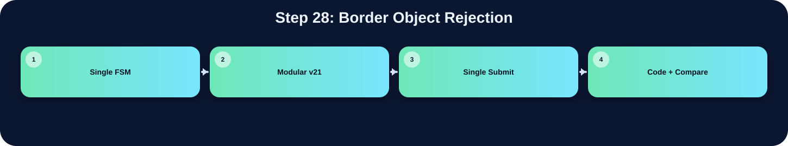

排除碰到邊界的 component。

此表把本流程在三個版本中的 state/module 與 code 關係整理出來；沒有明確對應者保持空白。
| 版本 | 對應 state / module | 和 code 的關係 |
|---|---|---|
| Single FSM | S_BOXMAP_GEN | 如果 bbox_border[label_idx] = 1，代表物件碰到邊界，直接跳過不畫 |
| Modular v21 | boxing_v21_fast | 若 bbox 碰到影像邊界，則跳過不畫 |
| Single Submit | boxing BOX_IDLE | 如果 bbox 碰到邊界，例如 min_x = 0 或 max_x = 255，就跳過 |
在「Border Object Rejection」流程中，三個版本都能對應到功能實作，但組織方式不同。Single FSM 版把功能集中在 S_BOXMAP_GEN，屬於 state-level 的集中控制。Modular v21 版對應到 boxing_v21_fast，通常由 top FSM 啟動特定子模組處理。Single Submit 版對應到 boxing BOX_IDLE，雖然整份 code 合併在同一個檔案中，但功能仍由相對應的 module 或 internal state 完成。因此比較重點不是功能有沒有做，而是硬體排程方式、記憶體控制權與模組邊界不同。
下方採用下拉式區塊顯示。中文說明放在程式碼上方；原始程式碼本身沒有修改、沒有插入註解。若某份檔案沒有明確對應流程，該程式碼區塊保持空白。
// 相對原本 S_GAUSS_HIST 65536 cycles 增加約 6 倍 simulation time，
// 但 synthesis time 從數十分鐘降為數分鐘。
// ============================================================
module drawBbox (
input clk,
input rst,
input enable,
output done,
input [31:0] Img_Q,
output reg Img_CEN,
output reg [15:0] Img_A,
input [31:0] Ur_Q,
output reg Ur_CEN,
output reg Ur_WEN,
output reg [31:0] Ur_D,
output reg [15:0] Ur_A,
input [31:0] Ans_Q,
output reg Ans_CEN,
output reg Ans_WEN,
output reg [31:0] Ans_D,
output reg [15:0] Ans_A
);
localparam [31:0] GREEN = 32'h0000_FF00;
localparam [16:0] NPIX = 17'd65536;
localparam [15:0] NPIX_LAST = 16'hFFFF;
localparam [9:0] MAX_LABELS = 10'd512;
localparam [8:0] MAX_LABEL_IDX = 9'd511;
localparam [5:0]
S_IDLE = 6'd0,
S_LOAD = 6'd1,
S_GRAY = 6'd2,
S_HIST_CLEAR = 6'd3,
S_LB_INIT = 6'd4, // 載入初始 line buffer（3 行）
S_LB_ROW = 6'd5, // 載入單一 row → linebuf_next
S_GAUSS_HIST = 6'd6,
S_OTSU_INIT = 6'd7,
S_OTSU_SCAN = 6'd8,
S_COUNT_HI = 6'd9,
S_POLARITY = 6'd10,
S_MASK_WRITE = 6'd11,
S_PARENT_INIT = 6'd12, // V16: clear parent/bbox arrays before CCL
S_LB_INIT2 = 6'd13, // CCL 前重新載入 line buffer
S_CCL_SCAN = 6'd14,
S_LB_ROW2 = 6'd15, // CCL 跨列 line buffer 更新
S_BBOX_INIT = 6'd16,
S_BBOX_SCAN = 6'd17,
S_BOXMAP_CLEAR = 6'd18,
S_BOXMAP_GEN = 6'd19,
S_DRAW_WRITE = 6'd20,
S_DONE = 6'd21,
// V19: split Otsu into multi-cycle states so DC sees one shared multiplier instead of many huge multipliers
S_OTSU_LHS = 6'd22,
S_OTSU_DENOM = 6'd23,
S_OTSU_SQUARE = 6'd24,
S_OTSU_CMP1 = 6'd25,
S_OTSU_CMP2 = 6'd26;
reg [5:0] state;
reg done_r;
assign done = done_r;
wire [31:0] unused_zero = (Ans_Q ^ Ans_Q);
// ============================================================
// 3-Row Line Buffer（取代 gray_mem[65535:0]）
// ============================================================
// V21: 3-bank line buffer.
// Instead of physically rotating 256 columns (prev<=curr, curr<=next),
// we keep three physical banks and rotate only 2-bit selectors.
// This preserves RTL alignment but is much easier for Design Compiler.
reg [7:0] linebuf_bank0 [0:255];
reg [7:0] linebuf_bank1 [0:255];
reg [7:0] linebuf_bank2 [0:255];
reg [1:0] lb_prev_sel, lb_curr_sel, lb_next_sel;
reg [31:0] hist [255:0];
reg [8:0] row_label [0:255];
reg [8:0] left_label;
reg [8:0] nw_label_hold;
reg [8:0] cur_label_comb;
reg [8:0] parent [MAX_LABELS-1:0];
reg bbox_valid [MAX_LABELS-1:0];
reg bbox_border [MAX_LABELS-1:0];
reg [7:0] bbox_xmin [MAX_LABELS-1:0];
reg [7:0] bbox_xmax [MAX_LABELS-1:0];
reg [7:0] bbox_ymin [MAX_LABELS-1:0];
reg [7:0] bbox_ymax [MAX_LABELS-1:0];
reg [15:0] addr_cnt;
reg [16:0] req_cnt;
reg [8:0] next_label;
reg [8:0] label_idx;
reg [7:0] edge_ctr;
reg [1:0] edge_stage;
// Line buffer loader
reg [7:0] lb_col; // 目前載入的欄
reg [7:0] lb_row; // 要從 UrSRAM 讀的列（供 S_LB_ROW 用）
reg [1:0] lb_phase; // 0=送addr, 1=等latency, 2=存資料
reg [1:0] lb_seq; // S_LB_INIT 階段序號 (0=prev, 1=curr, 2=next)
// lb_row_w：S_LB_INIT 階段根據 lb_seq 選擇要讀的 row
// 用 wire 避免 nonblocking timing 問題
wire [7:0] lb_init_row = (lb_seq == 2'd1) ? 8'd0 : 8'd1;
// seq=0: 讀 row1 (reflect of y=-1) → prev
// seq=1: 讀 row0 → curr
// seq=2: 讀 row1 → next
reg [7:0] otsu_t;
reg invert_sel;
reg [16:0] count_hi;
reg [31:0] wb_acc, sum_b_acc;
reg [7:0] otsu_idx;
reg [63:0] lhs48, rhs48;
reg [64:0] diff48;
reg [63:0] denom32;
reg [31:0] sum_total, wb_next, sum_b_next, otsu_idx32;
reg [129:0] square96, best_num;
reg [63:0] best_den;
reg [193:0] cmp_lhs, cmp_rhs;
// V19 synthesis-fast shared multiplier for Otsu.
// The original V18 S_OTSU_SCAN described several large multipliers in one cycle
// (32x32, 65x65, 130x64, 130x64). DC may spend a very long time optimizing them.
// Here all Otsu products go through one 130x64 combinational multiplier across
// several FSM states. RTL cycles increase by only ~5*256, but synthesis becomes much lighter.
reg [129:0] otsu_mul_a;
reg [63:0] otsu_mul_b;
wire [193:0] otsu_mul_y = otsu_mul_a * otsu_mul_b;
reg [7:0] ccl_x, ccl_y, ccl_base;
reg ccl_fg;
reg [8:0] ccl_n_w, ccl_n_nw, ccl_n_n, ccl_n_ne;
reg [8:0] ccl_chosen_label;
reg ccl_new_label;
reg [8:0] root_label;
reg [7:0] draw_ymax;
reg [31:0] first_pixel;
reg [1:0] special_box_idx;
reg [7:0] x_i, y_i, base_i;
// ============================================================
// function: refl101
// ============================================================
function [7:0] refl101;
input signed [31:0] v;
reg signed [31:0] t;
reg [31:0] tu;
begin
t = 32'sd0; tu = 32'd0;
if (v < 32'sd0) t = -v;
else if (v > 32'sd255) t = 32'sd510 - v;
else t = v;
tu = $unsigned(t);
refl101 = tu[7:0];
end
endfunction
// ============================================================
// function: gray_round_rgb
// ============================================================
function [7:0] gray_round_rgb;
input [31:0] pix;
reg [17:0] gs;
reg [9:0] gq;
reg [7:0] gr;
begin
gs = ({10'd0,pix[23:16]}*18'd77)+
({10'd0,pix[15:8]} *18'd150)+
({10'd0,pix[7:0]} *18'd29);
gq = gs[17:8]; gr = gs[7:0];
if ((gr>8'd128)||((gr==8'd128)&&(gq[0]==1'b1))) if(!neighbor_N && !neighbor_NE && !neighbor_NW && !neighbor_W)begin
label_buffer[buffer_count] <= new_label;
//line_buffer[buffer_count] <= new_label; // -------------
//line_buffer[{1'b1,buffer_count}] <= new_label;
new_label <= new_label + 10'd1;
// At least one labeled neighbor exists: use the minimum label and record equivalences
end else begin
//line_buffer[{1'b1, buffer_count}] <= min_neighbor;
label_buffer[buffer_count] <= min_neighbor;
//line_buffer[buffer_count] <= min_neighbor; // ---------------------
/*if (neighbor_W != 0 && neighbor_W != min_neighbor) eq_table[neighbor_W] <= min_neighbor;
if (neighbor_NW != 0 && neighbor_NW != min_neighbor) eq_table[neighbor_NW] <= min_neighbor;
if (neighbor_N != 0 && neighbor_N != min_neighbor) eq_table[neighbor_N] <= min_neighbor;
if (neighbor_NE != 0 && neighbor_NE != min_neighbor) eq_table[neighbor_NE] <= min_neighbor;*/
// Union heuristic: attach non-root labels to the selected root label
if (neighbor_W != 0 && neighbor_W != min_neighbor) eq_table[eq_table[neighbor_W]] <= min_neighbor;
if (neighbor_NW != 0 && neighbor_NW != min_neighbor) eq_table[eq_table[neighbor_NW]] <= min_neighbor;
if (neighbor_N != 0 && neighbor_N != min_neighbor) eq_table[eq_table[neighbor_N]] <= min_neighbor;
if (neighbor_NE != 0 && neighbor_NE != min_neighbor) eq_table[eq_table[neighbor_NE]] <= min_neighbor;
end
end else begin
//line_buffer[buffer_count] <= 10'd0; // ------------------------
label_buffer[buffer_count] <= 10'd0;
end
if(buffer_count < 8'd255)begin
//buffer_done <= 1'b0;
buffer_count <= buffer_count + 8'd1;
end else begin
buffer_done <= 1'b1;
end
end
end
end
FLATTEN_TABLE:begin
ans_cen <= 1'b1;
ans_wen <= 1'b1;
img_addr <= 16'd0;
if(flatten_idx < new_label)begin
// Case A: current label is already a root
if (eq_table[flatten_idx] == flatten_idx) begin
eq_table[flatten_idx] <= consecutive_label;
consecutive_label <= consecutive_label + 16'd1;
// Case B: current label points to an earlier parent
end else begin
eq_table[flatten_idx] <= eq_table[eq_table[flatten_idx]];
end
flatten_idx <= flatten_idx + 10'd1;
end else begin
flatten_done <= 1'b1;
end
ans_addr <= 16'd0;
end
READ_PASS_2:begin
ans_cen <= 1'b0;
ans_wen <= 1'b1;
ans_addr <= pass2_addr;
write_pass_2_done <= 1'b0;
read_pass_2_done <= 1'b1;
end
WRITE_PASS_2:begin
read_pass_2_done <= 1'b0;
if(read_pass_2_done_d)begin
if(pass2_addr == 16'd65535)begin
ans_wen <= 1'b0;
ans_cen <= 1'b0;
ans_D <= {16'd0, eq_table[ans_Q[15:0]]};
write_pass_2_finish <= 1'b1;
end else begin
ans_wen <= 1'b0;
ans_cen <= 1'b0;
pass2_addr <= pass2_addr + 16'd1;
ans_D <= {16'd0, eq_table[ans_Q[15:0]]};
write_pass_2_done <= 1'b1;
end
end
end
DONE:begin
ans_cen <= 1'b1;
ans_wen <= 1'b1;
labeler_done<= 1'b1;
end
endcase
end
end
endmodule
// ============================================================================
// Stage module: boxing_v21_fast
// Function
// Scan the resolved labels in AnsSRAM, compute xmin/xmax/ymin/ymax for each
// connected component, copy the original RGB image into AnsSRAM, then draw a
// one-pixel green bounding box around every valid non-border component.
// ============================================================================
(* keep_hierarchy = "yes" *)
module boxing_v21_fast(
input clk, // 系統時脈輸入
input rst, // 同步或非同步重置信號
input enable, // 啟動整體影像處理流程
output reg done, // 輸出完成旗標
input [9:0] total_label, // top/module 介面訊號宣告
// ImgROM
input [31:0] Img_Q, // ImgROM 讀回的 32-bit RGB pixel
output reg Img_CEN, // ImgROM 低有效 chip enable
output reg [15:0] Img_A, // ImgROM 讀取位址
// AnsSRAM
input [31:0] Ans_Q, // AnsSRAM 讀回資料
output reg Ans_CEN, // AnsSRAM 低有效 chip enable
output reg Ans_WEN, // AnsSRAM 讀寫控制，0 為寫入、1 為讀取
output reg [31:0] Ans_D, // AnsSRAM 寫入資料
output reg [15:0] Ans_A // AnsSRAM 存取位址
);
reg [15:0] pixel; // 循序邏輯暫存器宣告
reg [7:0] min_x[364:0]; // 循序邏輯暫存器宣告
reg [7:0] max_x[364:0]; // 循序邏輯暫存器宣告
reg [7:0] min_y[364:0]; // 循序邏輯暫存器宣告
reg [7:0] max_y[364:0]; // 循序邏輯暫存器宣告
reg scan_done; // 循序邏輯暫存器宣告
reg copy_done,copy_done_d; // 循序邏輯暫存器宣告
reg [8:0] box_count; // 循序邏輯暫存器宣告
reg [2:0] state, next_state; // 目前 top FSM 狀態
localparam IDLE = 3'd0; // FSM 狀態或常數參數宣告
localparam SCAN = 3'd1; // FSM 狀態或常數參數宣告
localparam COPY = 3'd2; // FSM 狀態或常數參數宣告
localparam BOXING = 3'd3; // FSM 狀態或常數參數宣告
localparam DONE = 3'd4; // FSM 狀態或常數參數宣告
// Final-pixel tail states keep the last ROM address, data, and write strobes
// stable long enough for the SRAM model to capture Ans[65535].
localparam COPY_LAST_READ = 3'd5; // FSM 狀態或常數參數宣告
localparam COPY_LAST_WRITE = 3'd6; // FSM 狀態或常數參數宣告
localparam COPY_LAST_HOLD = 3'd7; // FSM 狀態或常數參數宣告
reg Img_CEN_d; // 循序邏輯暫存器宣告
reg Ans_CEN_d; // 循序邏輯暫存器宣告
reg [7:0] cur_x ; // 循序邏輯暫存器宣告
reg [7:0] cur_y ; // 循序邏輯暫存器宣告
always@(posedge clk or posedge rst)begin
if(rst)begin
Img_CEN_d <= 1'b0;
Ans_CEN_d <= 1'b0;
end else begin
Img_CEN_d <= Img_CEN;
Ans_CEN_d <= Ans_CEN;
end
end
reg [2:0] box_state,box_next_state; // FSM 狀態暫存器宣告
localparam BOX_IDLE = 3'd0; // FSM 狀態或常數參數宣告
localparam BOX_INITIAL = 3'd1; // FSM 狀態或常數參數宣告
localparam BOX_WRITE_1 = 3'd2; // FSM 狀態或常數參數宣告
localparam BOX_WRITE_2 = 3'd3; // FSM 狀態或常數參數宣告
localparam BOX_WRITE_3 = 3'd4; // FSM 狀態或常數參數宣告
localparam BOX_WRITE_4 = 3'd5; // FSM 狀態或常數參數宣告
localparam BOX_DONE = 3'd6; // FSM 狀態或常數參數宣告
reg [7:0] pixel_x, pixel_y; // 循序邏輯暫存器宣告
reg box_write_1_done,box_write_3_done,box_write_4_done; // 循序邏輯暫存器宣告
reg boxing_done; // 循序邏輯暫存器宣告
reg [15:0] read_pixel; // 循序邏輯暫存器宣告
integer i; // for-loop 或計數用途的整數變數宣告
integer j; // for-loop 或計數用途的整數變數宣告
always@(posedge clk or posedge rst)begin
if(rst)begin
Img_CEN <= 1'b0;
Img_A <= 16'd0;
Ans_CEN <= 1'b0;
Ans_WEN <= 1'b0;
Ans_D <= 32'd0;
Ans_A <= 16'd0;
pixel <= 16'd0;
for(i = 0; i < 365; i = i+1)begin
min_x[i] <= 8'd0;
max_x[i] <= 8'd0;
min_y[i] <= 8'd0;
max_y[i] <= 8'd0;
end
cur_x <= 8'd0;
cur_y <= 8'd0;
scan_done <= 1'b0;
copy_done <= 1'b0;
copy_done_d <= 1'b0;
box_count <= 10'd0;
pixel_x <= 8'd0;
pixel_y <= 8'd0;
box_write_1_done <= 1'b0;
//box_write_2_done <= 1'b0; end
if(buffer_count < 8'd255)begin
//buffer_done <= 1'b0;
buffer_count <= buffer_count + 8'd1;
end else begin
buffer_done <= 1'b1;
end
end
end
end
FLATTEN_TABLE:begin
ans_cen <= 1'b1;
ans_wen <= 1'b1;
img_addr <= 16'd0;
if(flatten_idx < new_label)begin
// Situation A : it is a root
if (eq_table[flatten_idx] == flatten_idx) begin
eq_table[flatten_idx] <= consecutive_label;
consecutive_label <= consecutive_label + 16'd1;
// Situation B : it points to previous one
end else begin
eq_table[flatten_idx] <= eq_table[eq_table[flatten_idx]];
end
flatten_idx <= flatten_idx + 10'd1;
end else begin
flatten_done <= 1'b1;
end
ans_addr <= 16'd0;
end
READ_PASS_2:begin
ans_cen <= 1'b0;
ans_wen <= 1'b1;
ans_addr <= pass2_addr;
write_pass_2_done <= 1'b0;
read_pass_2_done <= 1'b1;
end
WRITE_PASS_2:begin
read_pass_2_done <= 1'b0;
if(read_pass_2_done_d)begin
if(pass2_addr == 16'd65535)begin
ans_wen <= 1'b0;
ans_cen <= 1'b0;
ans_D <= {16'd0, eq_table[ans_Q[15:0]]};
write_pass_2_finish <= 1'b1;
end else begin
ans_wen <= 1'b0;
ans_cen <= 1'b0;
pass2_addr <= pass2_addr + 16'd1;
ans_D <= {16'd0, eq_table[ans_Q[15:0]]};
write_pass_2_done <= 1'b1;
end
end
end
DONE:begin
ans_cen <= 1'b1;
ans_wen <= 1'b1;
labeler_done<= 1'b1;
end
endcase
end
end
endmodule
// ================================================================
// Source: boxing.v
// ================================================================
module boxing(
input clk,
input rst,
input enable,
output reg done,
input [9:0] total_label,
// ImgROM
input [31:0] Img_Q,
output reg Img_CEN,
output reg [15:0] Img_A,
// AnsSRAM
input [31:0] Ans_Q,
output reg Ans_CEN,
output reg Ans_WEN,
output reg [31:0] Ans_D,
output reg [15:0] Ans_A
);
reg [15:0] pixel;
reg [7:0] min_x[364:0];
reg [7:0] max_x[364:0];
reg [7:0] min_y[364:0];
reg [7:0] max_y[364:0];
reg scan_done;
reg copy_done,copy_done_d;
reg [8:0] box_count;
reg [2:0] state, next_state;
localparam IDLE = 3'd0;
localparam SCAN = 3'd1;
localparam COPY = 3'd2;
localparam BOXING = 3'd3;
localparam DONE = 3'd4;
reg Img_CEN_d;
reg Ans_CEN_d;
reg [7:0] cur_x ;
reg [7:0] cur_y ;
always@(posedge clk or posedge rst)begin
if(rst)begin
Img_CEN_d <= 1'b0;
Ans_CEN_d <= 1'b0;
end else begin
Img_CEN_d <= Img_CEN;
Ans_CEN_d <= Ans_CEN;
end
end
reg [2:0] box_state,box_next_state;
localparam BOX_IDLE = 3'd0;
localparam BOX_INITIAL = 3'd1;
localparam BOX_WRITE_1 = 3'd2;
localparam BOX_WRITE_2 = 3'd3;
localparam BOX_WRITE_3 = 3'd4;
localparam BOX_WRITE_4 = 3'd5;
localparam BOX_DONE = 3'd6;
reg [7:0] pixel_x, pixel_y;
reg box_write_1_done,box_write_3_done,box_write_4_done;
reg boxing_done;
reg [15:0] read_pixel;
integer i;
integer j;
always@(posedge clk or posedge rst)begin
if(rst)begin
Img_CEN <= 1'b0;
Img_A <= 16'd0;
Ans_CEN <= 1'b0;
Ans_WEN <= 1'b0;
Ans_D <= 32'd0;
Ans_A <= 16'd0;
pixel <= 16'd0;
for(i = 0; i < 365; i = i+1)begin
min_x[i] <= 8'd0;
max_x[i] <= 8'd0;
min_y[i] <= 8'd0;
max_y[i] <= 8'd0;
end
cur_x <= 8'd0;
cur_y <= 8'd0;
scan_done <= 1'b0;
copy_done <= 1'b0;
copy_done_d <= 1'b0;
box_count <= 10'd0;
pixel_x <= 8'd0;
pixel_y <= 8'd0;
box_write_1_done <= 1'b0;
//box_write_2_done <= 1'b0;
box_write_3_done <= 1'b0;
box_write_4_done <= 1'b0;
done <= 1'b0;
boxing_done <= 1'b0;
read_pixel <= 16'd0;
end else begin
case(state)
IDLE:begin
Img_CEN <= 1'b1;
Img_A <= 16'd0;
Ans_CEN <= 1'b1;
Ans_WEN <= 1'b1;
Ans_D <= 32'd0;
Ans_A <= 16'd0;
pixel <= 16'd0;
for(j = 0; j < 365; j = j+1)begin
min_x[j] <= 8'd255;
max_x[j] <= 8'd0;
min_y[j] <= 8'd255;
max_y[j] <= 8'd0;
end
scan_done <= 1'b0;